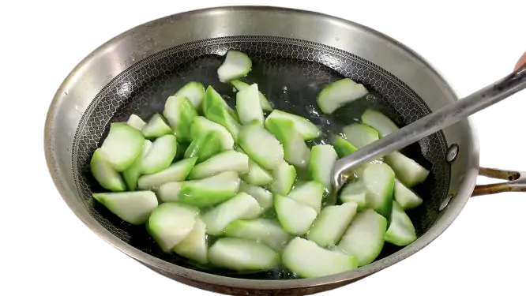
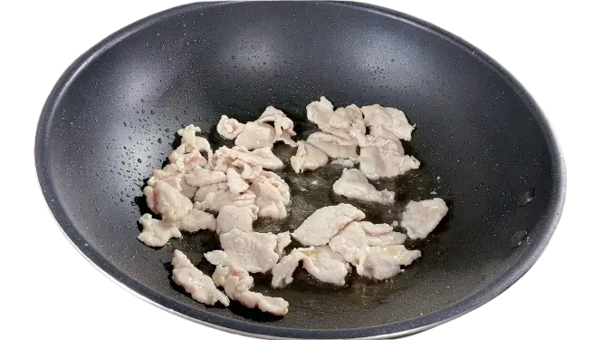
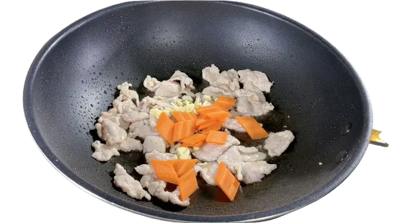
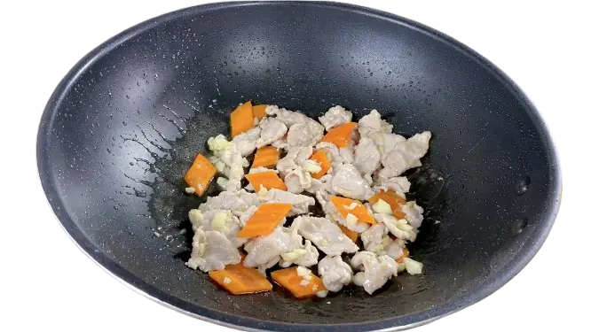
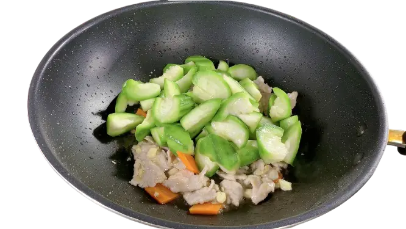
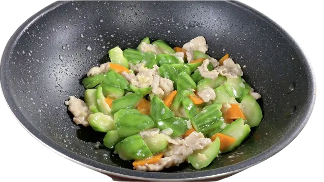

准备食材
丝瓜、瘦肉、一小段红萝卜、几片蒜头、一小块老姜、盐、鸡粉、胡椒粉。
- 丝瓜去皮，滚刀切块，装好备用；
- 蒜头拍碎，切成蒜蓉；
- 老姜拍碎，切成姜蓉；
- 红萝卜切片；
- 瘦肉切片，加入少量盐、鸡精、一点点白糖、少许胡椒粉、料酒、适量生粉，抓拌均匀后，最后添加少许油，继续抓拌均匀 （更好锁住水分、防止肉片粘在一起）；


烹饪
- 大火起锅烧开水，添加盐少许盐、油，增加汤水的底味，（焯水添加油，青菜会更加翠绿）；
- 放入丝瓜焯水，翻下丝瓜，使丝瓜均匀受热，大概焯水一分钟，丝瓜八分熟，避免过熟，影响口感，捞起丝瓜装好备用；
- 重新热锅冷油，放入肉片，开大火快速翻炒，将肉片炒散，炒到八、九分熟；
- 加入辅料——蒜蓉、姜蓉、胡萝卜片，然后转小火持续翻炒30秒左右，将辅料炒出香味；
- 倒入丝瓜，转大火，锅边淋入适量的料酒，进一步去腥增香；
- 开始调味，添加适量盐、少量鸡粉、一点点白糖提鲜，翻炒均匀；
- 丝瓜炒制容易析出大量水分，淋入少量稀薄水淀粉勾芡，快速炒匀，轻微收浓汤汁，让汤汁挂在瓜片表面；
- 加少量油进来收尾，翻炒均匀，出锅完成。





